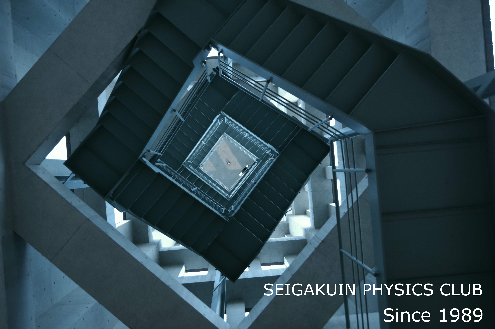

<!DOCTYPE html>
<html lang="ja">
<head>
  <meta charset="UTF-8">
  <meta name="viewport" content="width=device-width,initial-scale=1.0,minimum-scale=1.0">
  <meta content="ja" http-equiv="content-language">
  <link rel="icon" sizes="64x64" href="./img/icon/64.ico">
  <link rel="icon" sizes="48x48" href="./img/icon/48.ico">
  <link rel="icon" sizes="32x32" href="./img/icon/32.ico">
  <link rel=”icon” sizes="16x16" href="./img/icon/16.ico"> 
  <link rel="stylesheet" href="https://use.fontawesome.com/releases/v5.6.3/css/all.css">
  <script>(function (d, e, j, h, f, c, b) { d.GoogleAnalyticsObject = f; d[f] = d[f] || function () { (d[f].q = d[f].q || []).push(arguments) }, d[f].l = 1 * new Date(); c = e.createElement(j), b = e.getElementsByTagName(j)[0]; c.async = 1; c.src = h; b.parentNode.insertBefore(c, b) })(window, document, "script", "//www.google-analytics.com/analytics.js", "ga"); ga("create", "UA-68964193-9", "auto"); ga("send", "pageview");</script>
  <link href="./style.css" rel="stylesheet">
  <link rel="stylesheet" href="https://cdnjs.cloudflare.com/ajax/libs/Swiper/4.3.3/css/swiper.min.css">
  <script src="https://cdnjs.cloudflare.com/ajax/libs/Swiper/4.3.3/js/swiper.min.js"></script>
  <!-- Global site tag (gtag.js) - Google Analytics -->
<script async src="https://www.googletagmanager.com/gtag/js?id=G-Z4JE03L973"></script>
<script>
  window.dataLayer = window.dataLayer || [];
  function gtag(){dataLayer.push(arguments);}
  gtag('js', new Date());

  gtag('config', 'G-Z4JE03L973');
</script>
  <title>物理部｜HOME</title>
</head>
<body>
  <div id="loading_animation">
    <div class="spinner">
      <div class="rect1"></div>
      <div class="rect2"></div>
      <div class="rect3"></div>
      <div class="rect4"></div>
      <div class="rect5"></div>
    </div>
    <h1 class="center">NOW LOADING...</h1>
  </div>
  <!--ここから-->
  <div id= "header" name = "header">
      <!--ヘッダー-->
      
      <h1 id= "title">Welcome to Physics World</h1>
      <!--
      <h2 id= "sub-title">SEIGAKUIN PHYSICS CLUB</h2>
      <h2 id= "sub-title2">Since 1989</h2>-->
      <!--ヘッダーここまで-->
  </div>
  <div id= "content">
  <div id= "main_content">
      <!--メインコンテンツ-->
      <h1 class= "content-title">Introduction</h1>
      <br>
      <p> 文化部である物理部は運動部に比べて大会等が多くありません。ゆえに、外部のみなさんに活動を知ってもらう機会がとても少ない現状です。</p>
      <p>そこで、みなさんにもっと物理部について知ってもらおうとこのホームページを作りました。</p>
      <p>このホームページを通じて、みなさんが物理部について知ってもらえれば幸いです。不十分な点も多々あるかと思いますが、よろしくお願いします。</p>
      <p>物理部には、40年以上の活動実績があります。25年前までは、「無線部」という名称で活動していましたが、部員からの要望や活動対象を広げるなどの理由から1989年に名称を「物理部」と改称しました。</p>
      <p>2000年4月からは中学物理部も認められ、現在は中学・高校と名目上は別組織ですが、研究は連携をとりながら活動をしています。 </p>
      <p>部員は40人ほどいて、聖学院でも賑やかな部活です。</p>
      <div id= "about_club">
        <h1 class= "content-title">About Club</h1>
        <br>
        <h4>Daily Activities『普段の活動』</h4>
        <a href="./daily_activity.html" class="btn-edge">「普段の活動について」</a>
        <br>
        <h4>About Camp『合宿について』</h4>
        <a href="./aboutcamp.html" class="btn-edge">「合宿について」</a>
        <br>
        <h4>One year Schedule『一年の予定』</h4>
        <a href="./schedule.html" class="btn-edge">「一年の予定」</a>
      </div>
      <h1 class= "content-title">About Memorial Festival</h1>
      <br>
      <p>聖学院中学、高等学校では、記念祭(所謂、学園祭)を11月のはじめ頃に行っています。
        物理部は2019年度現在、総合優勝を２連続で受賞しています。
        記念祭では、本館４階物理実験室で普段物理部員がしている活動の見学や体験ができます。
        『液体窒素大実験』、『ドローン操縦体験』、『個人研究紹介、体験』『フライトシミュレーター体験』などがあります。
      </p>
      <!--メインコンテンツここまで-->
      <br>
      <div id= "contact">
          <br>
          <!--コンタクト、SNS-->
          <h1 class= "content-title">Contact</h1>
          <br>
          <h4><a href="https://twitter.com/seig_physics" target="_blank" rel="noopener noreferrer"><i class="fab fa-twitter-square"></i> Twitter @seig_physics</a></h4>
          <h4><a href="https://www.facebook.com/seigphysics" target="_blank" rel="noopener noreferrer"><i class="fab fa-facebook-square"></i> FacaBook @seigphysics</a></h4>
        <!--コンタクト、SNSここまで-->
        <br>
    </div>
  </div>
  </div>
  <div id= "footer">
      <!--フッター-->
      <h3 id= "copy_right">&copy; 2020 SEIG-PHYSICS_CLUB &nbsp; All Rights Reserved</h3>
      <!--フッターここまで-->
  </div>
  <!--ここまで-->
  <script src="./jquery-3.4.1.min.js"></script>
  <script src="./index.js"></script>
</body>
</html>